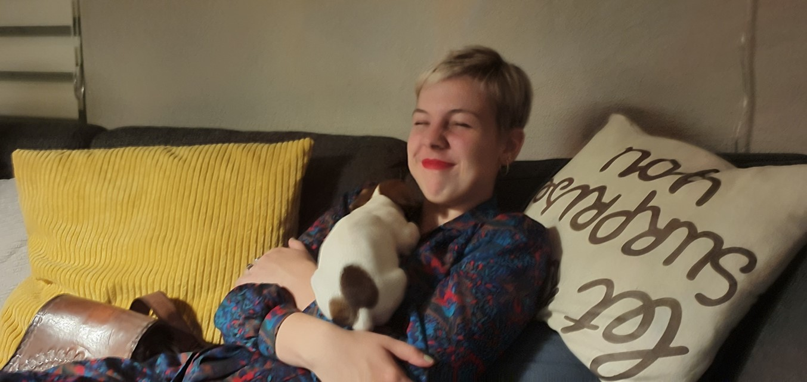

Lieve Lotte,
Op deze pagina vind je een aantal van de herinneringen die ik met jou heb en daarbij een stel hele charmante foto’s. Have a fun trip down memory lane :)
Ze zijn trouwens niet in chronologische volgorde want ik heb echt geen idee. Triest eigenlijk. Ik zie wel dat je haar steeds veranderd maar dat is het dan ook hahaa.
Weet je nog? Deze avond waren we met een deel van de groep naar BoeCult gegaan. Het was allemaal rare dj-muziek en Nederlandse rap, maar we hebben zo’n lol gehad. Zoals op de foto te zien hebben we ook nog midden in de nacht friet gehaald, en ik weet nog dat we daarna naar Celine’s huis zijn gehuppeld. Geen alcohol genuttigd maar helemaal 100 waren we toen ook niet…
De tweede dag zijn we toen ook nog in de middag geweest. Het was verrekkes warm en toen zijn we maar een ijsje gaan eten bij de friettent om af te koelen. Die dag was wel meer onze muzieksmaak, dus ondanks al het gezweet was dat ook een hele leuke dag!
De gelegenheid waarop deze foto is genomen kan ik me niet echt meer herinneren. Ik geloof dat het Lieke’s verjaardag was? We hadden toen een app ontdekt die old school foto’s maakte en die hebben we toen ook echt de hele avond gemaakt. Niet heel speciaal maar ik vind het wel een leuke foto :)
Deze foto’s zijn gemaakt op de avond van het kerstdiner en surprise een aantal jaar geleden. Ik had toen jouw lootje getrokken en een boombox gemaakt. Ook omdat je van muziek houdt net als ik, maar vooral omdat het wel bij het cadeautje paste, namelijk een cd.
Ik had het idee dat je de surprise en het cadeautje wel leuk vond. Het duurde volgens mij alleen even voordat je had uitgevogeld hoe je het cadeautje vond. Ik had dit toch wel slim bedacht hé, net echt hihi.
Deze gezellige foto is gemaakt op de avond voor de examenstunt. We zijn toen naar school geweest om voor te bereiden, hebben daarna frietjes, kip kibbeling en McDonalds voor Tessa gehaald en hebben een picknick in het park gehouden. Na het eten zijn we terug naar school gegaan om de hele school op stelten te zetten en alle gangen met touw te blokkeren en meubels aan elkaar en aan het plafond te maken. De ochtend daarna zijn we echt rond een uur of 7 al naar school gefietst om ons werk af te maken en toen heeft de conciërge nog tegen ons staan schreeuwen. Beetje jammer, maar de stunt zelf en voorbereiding waren wel superleuk.

Deze schattige foto is gemaakt toen jullie allemaal bij mij op bezoek waren, volgens mij om film te kijken. Bella was toen nog heel klein en nóg schattiger en jij was spontaan verliefd.
Gewoon super cute dus deze moest ik ook even laten zien.
Deze blurry foto is natuurlijk gemaakt op de avond van ons gala. Ik geloof dat ie uit Celine’s secondefilmpje komt. Dit is zo’n lekker spontane foto midden in alle hectiek. We zagen er allemaal super fancy uit, en ondanks dat iedereen t feest al na een uur ofzo verlaatte was het echt supergezellig, want we hadden eigenlijk heel Markant voor ons alleen aan het einde van de avond. Ik herinner me de stress ook nog wel van de storm die dreigde en de stoet verpestte. Ook al was de stoet geannuleerd, iedereen heeft toch heel koppig doorgezet, en we waren net op tijd binnen voordat het losbarstte. Het was die dag ook echt heeeeeel erg warm weet ik nog wel. Lekker die mooie jurken bezweten haha.
En natuurlijk kunnen de hilarische foto’s van onze vakantie naar de Ardennen niet ontbreken. We hebben een avond een of ander spel gespeeld waarbij we van die klemmen in onze mond moesten. My god, wat was dat charmant. Maar niks vergeleken bij jouw super hippe staartje in je haren hihi. We hebben in ieder geval een hoop lol gehad toen.
En toen kwam Corona om de hoek kijken. Ik ben er nog steeds van overtuigd dat wij het met carnaval hebben opgelopen. De avonden chillen bij Christy in de kelder werden ingeruild voor avonden skypen. Ook supergezellig en een goed alternatief om elkaar toch nog te kunnen zien.
In de zomervakantie was Corona al een tijdje aan de gang, maar door de zomer was er iets meer mogelijk. Toen zijn we een dagje naar Burgers Zoo geweest. Alweer fucking warm maar echt een leuke dag. Ik hoop dat we dit snel weer een keer kunnen doen als de situatie het weer toelaat. Ik vond het zo grappig toen we naar het verblijf met de vlinders gingen. Ik vond het ook niet fantastisch, maar werd eigenlijk zenuwachtiger van jou haha. Jij was doodsbang voor de vlinders en rende bijna de route af om daar maar weg te komen.
Dit is natuurlijk maar een klein deel van alle avonturen die we allemaal al gehad hebben.
Zo zijn we ook naar de Efteling geweest en nog veel meer andere dingen. Hopelijk komen daar ook nog een hele hoop herinneringen en gekke foto’s bij de komende jaren.
Ik wens je in ieder geval een hele fijne verjaardag Lotte!